Tutti casa, famiglia e bot-badanti?
L’ambient-computing secondo Amazon e Google
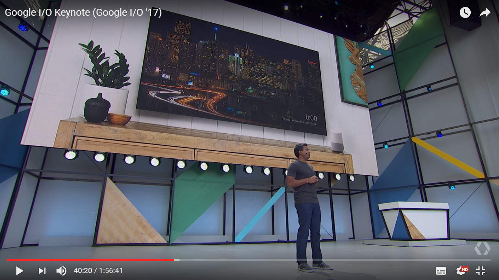
Nelle settimane scorse sono emerse eclatanti novità sui nuovi prodotti e servizi di Amazon e Google (e ultima ma non ultima Microsoft), che riguardano direttamente il mondo dei chatbots.
Si parla sempre di più di ubiquitous computing (termine usato dai paladini Google) ovvero di ambient computing (termine usato dagli evangelisti Amazon). Molti esperti sono d’accordo sul fatto che, udite udite, non solo i personal computers andranno a sparire, ma nel prossimo decennio ci sembrerà progressivamente ridicolo parlare di mobile first, dato che anche i telefoni cellulari non saranno più così fondamentali. Che succederà allora?
Ci sarà un progressivo utilizzo pervasivo di servizi vocali e multimodali (termine usato da Google) di tipo conversazionale, che agiranno sui dispositivi di interfaccia più disparati: i telefoni mobili ancora, ma anche terminali vocali e TV interattive.
La gente userà sempre di più interfacce vocali per accedere ai servizi, per strada, in automobile e soprattutto, guarda un pò, a casa.
Il mercato nuovo è quello vecchio! La famiglia, la casa!
Questa sembra la strategia commerciale di Amazon, senza dubbio, ma anche quella di Google. D’accordo, ammettiamo che sia così, ma cosa sono queste annunciate conversational user experiences?
Stiamo parlando di chatbots, ma in un contesto ben più vasto di quello di software per la messaggistica chat.
“Assistant is a conversational interface to Google” — Brad Abrams
Anzi, più che semplice interfaccia, la conversazione è il nuovo paradigma computazionale per Google ed Amazon prime tra tutte (vedi dopo).
Il dialogo diventerà il modo con cui rapportarci con i computers, anzi tutte le “cose”: un numero e tipo innumerevole di dispositivi attorno a noi.
Conversazione, nell'accezione della teoria della conversazione di Gordon Pask (quindi nei termini della cibernetica classica)
ma anche
Conversazione, nei presupposti del principio collaborativo delle massime conversazionali di Paul Grice; ovvero per la progettazione di chatbots “funzionali”, che seguano linee guide di etica ed estetica linguistica, infine di pragmatica.
Tutti ambiti di studio per il team di Google Design che si occupa specificamente di Conversational Voice User Interfaces (non posso non ricordare tra gli altri: Brad Adams, Nandini Stocker, Daniel Padgett, James Giangola, Ilya Gelfenbeyn).
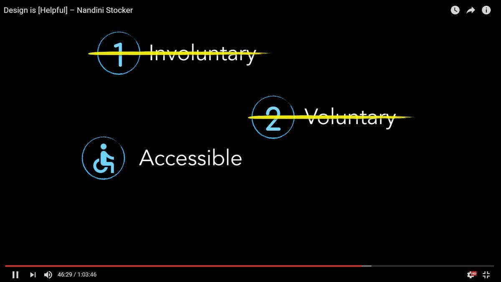
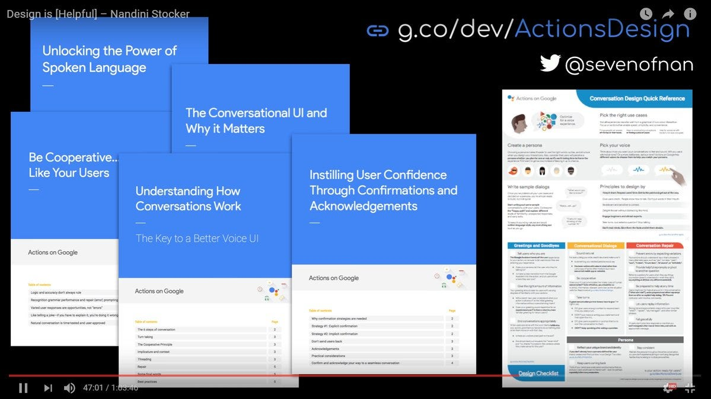
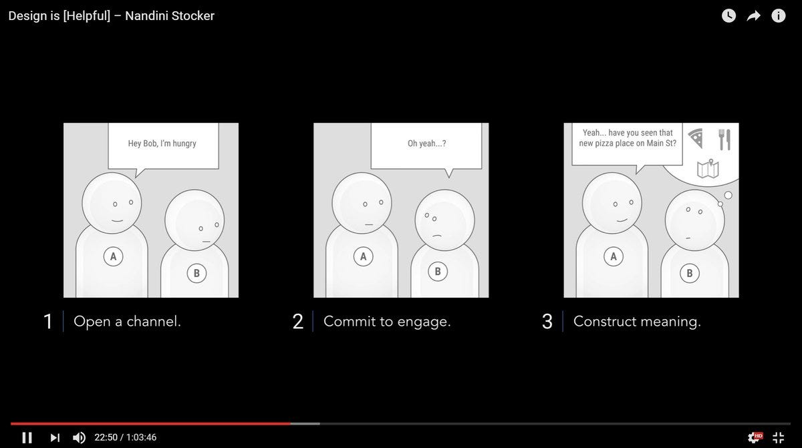
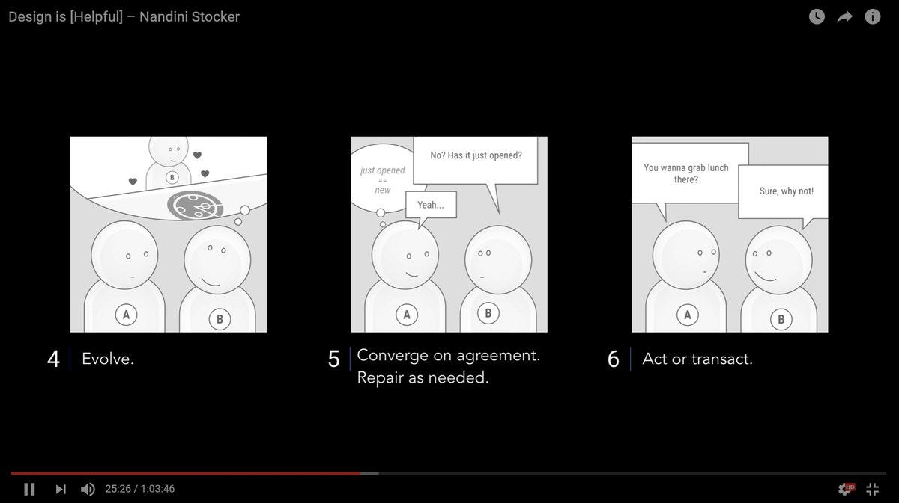
Ogni settimana vengono lanciati sul mercato nuovi dispositivi hardware voicefirst ed il termine “conversazionale” è ormai una keyword tra chi si interessa di design ed UX/UI.
BTW, atteso annuncio questa notte, da parte della startup di Andy Rubin (Android):
Proprio oggi Jess Thoms (Xandra Labs) nel suo bell’articolo “A guide to developing bot personalities”, conferma il nuovo trend di un approccio psicologico e di scrittura creativa, necessari alla costruzione di interactive screen writing (per dirla alla Oren Jacob), per chatbots che devono avere una personalità (bot-persona):
Ma al di là dei propositi e dei facili slogan (“Intelligenza Artificiale” citata a sproposito dappertutto), la maggior parte dei chatbots attualmente in produzione hanno dialoghi troppo elementari.
Mi trovo dunque d’accordo con la critica sollevata qualche giorno fa da Cheryl Platz (Microsoft) il quale ha sostenuto che attualmente anche i chatbots vocali su Amazon Alexa e Google Assistant sono ben poco conversazionali (Voice User Interface Design: New Solutions to Old Problems); ecco un esempio pratico che lei fa nel suo articolo:
By way of example, the “natural language” way to turn off a light isn’t deeply conversational. You wouldn’t turn to your spouse and say, “Isn’t it a chilly night? I’m feeling a bit cold. Turn the thermostat up, won’t you?” (Unless you’re in an Oscar Wilde play, perhaps.) You’d probably just blurt out “Turn the thermostat down.” Less of a conversation, more of a request.
—Cheryl Platz Voice User Interface Design: New Solutions to Old Problems
Tornando al titolo di questo articolo, penso che la casa e la famiglia siano nuovi mercati di conquista dei big players della comunicazione (e dei media). Due recenti novità di Amazon e Google mi hanno portato a questa conclusione. Andiamo con ordine:
1. Amazon Echo Show ed Alexa
Il dispositivo smart speaker di Amazon Echo nasce nel novembre 2014. Ma è senz'altro all'inizio del 2017 che Echo e il pargoletto Echo Dot raggiungono in USA un successo notevole. Stiamo parlando di un dispositivo connesso ad internet con dei microfoni ed altoparlanti, che permette di “parlare” ad Alexa, una sorta di metabot centralizzato in Amazon.
Qualche settimana fa Amazon lancia due nuovi dispositivi che estendono Echo aggiungendo una telecamera (Echo Look) ed uno screen (Echo Show). Consiglio la lettura della bellissima analisi di Chris Messina:
Nell’articolo Messina fa una analisi socio-economica (prima che tecnica) del perché questo apparentemente “stupido” visore touch-screen è una soluzione dirompente e sottovalutata (se non addirittura derisa da molti). Io mi trovo invece d’accordo con lui su tutti i punti, e vedo ulteriori impatti:
Penso che Amazon Echo Show sia, seppur sicuramente un prototipo forse non duraturo, un definitivo punto di ingresso di Amazon su settori prima poco esplorati dal colosso dell’ecommerce: la famiglia, la casa, la comunicazione interpersonale con voce e video (in concorrenza diretta con le mobile Telco!). Il dispositivo si pone infatti come abilitatore di video-chiamate tra familiari (servizio drop-in).
Penso che la cara vecchia TV non sia affatto morta (ovviamente lo è morta nei termini di fruizione di canali broadcast, ma non lo è nei termini di centro di intrattenimento interattivo per la famiglia).
Echo Show e la Amazon Fire TV (sono appena usciti nuovi televisori Amazon con screen giganti, Alexa-enabled, ovvero che integrano una interfaccia vocale con un televisore) permetteranno presto lo sviluppo di quelli che chiamo TVbots, ovvero chatbots che estendono gli Alexa skills per applicazioni “multimodali”, non solo vocali, ma dove l’informazione di output all’utente potrà essere non solo audio ma anche visiva: per esempio un utente potrà chiedere ad alta voce le previsioni del tempo e in aggiunta ad una risposta vocale, sarà anche visualizzata una infografica nella TV di casa nel salotto, od in un piccolo Echo Show in camera da letto, ed eventualmente su una app sul telefono mobile o su su un dispositivo embedded dentro l’automobile, etc. etc.
2. L’evento Google I/O 17: Google Assistant per tutto
Settimana scorsa è terminato lo spettacolare evento #IO17.
In Italia se ne è parlato poco, ma Google ha presentato (in alcuni casi in verità solo annunciato) forse il numero di nuovi prodotti e servizi più ampio in tutta la sua storia, con uno spettacolo multisala durato tre giorni e che ha coinvolto quasi 300 persone sul palco, tra responsabili di area e molti “semplici” sviluppatori.
Lasciamo un attimo da parte l’approccio “democratico” e multiculturale che Google vuole comunicare (e che merita un articolo separato) e concentriamoci sugli aspetti strategici relativi ad Assistant (metabot paragonabile ad Alexa) ed il dispositivo Home (diretto antagonista di Amazon Echo).
La strategia di Google è dichiaratamente “conversazionale” e non riguarda solo il dispositivo Google Home; l’azienda propone un SDK per poter “far parlare” ogni elettrodomestico con Google Assistant:
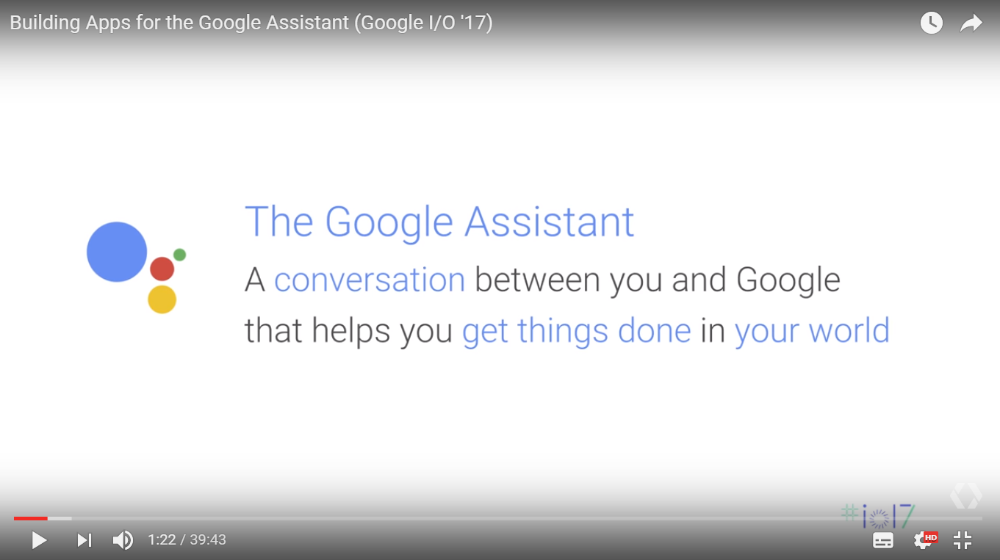
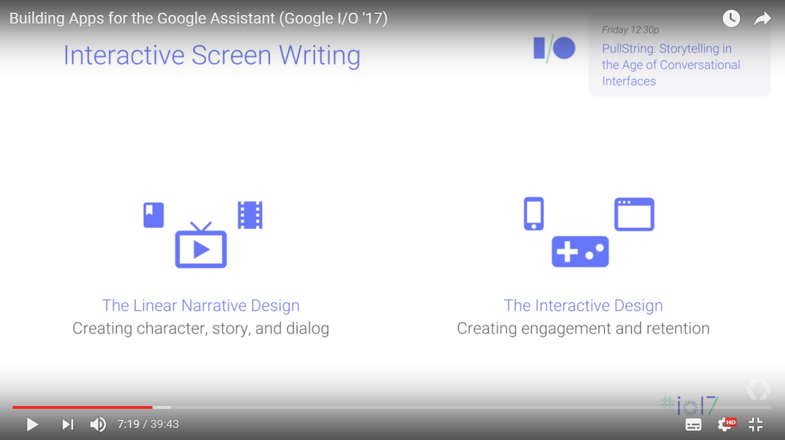
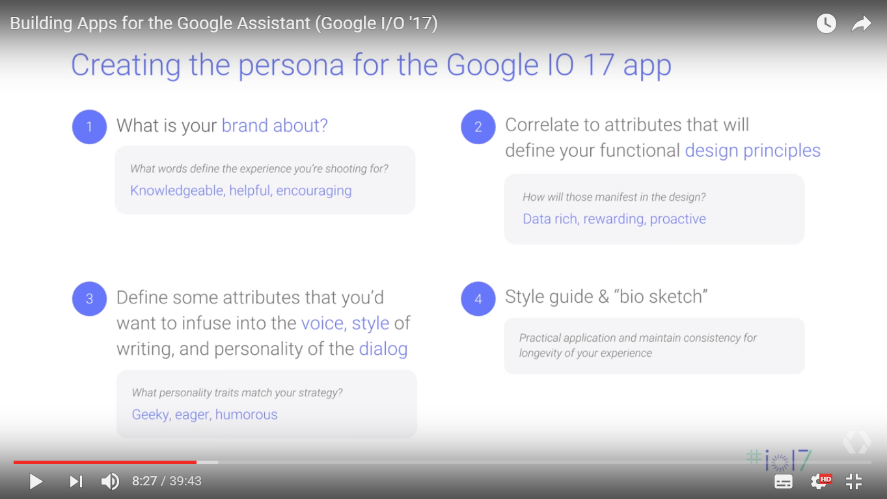
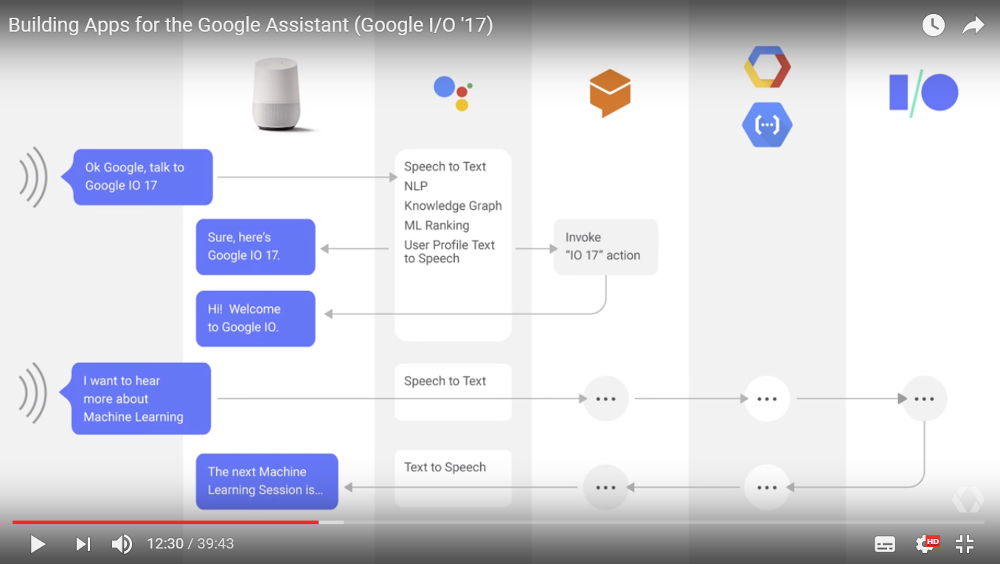
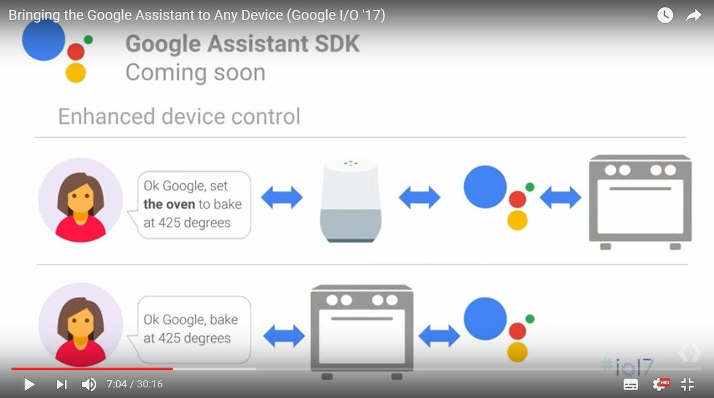
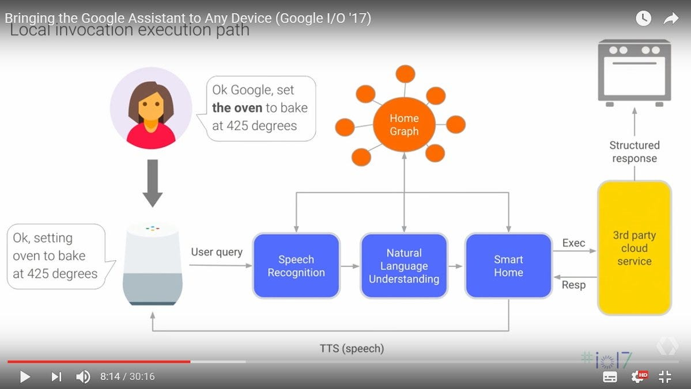
Personalmente sono impressionato della (nuova) visione di Google e per una volta mi devo rimangiare la mia ironia sul “don’t be evil” della corporation. Stanno facendo un lavoro culturale notevole. Chapeau.
Ho raccolto tutti i talk dell’evento relativi a Google Assistant, Actions on Google e Conversational Design. Vedi anche:
Ma cosa c’entrano i Bot-Badanti?
Diamo per scontato il fatto che parleremo sempre più con TV, elettrodomestici aggeggi vari ad interfaccia vocale, telefoni, automobili, etc.
In verità chi risponderà saranno probabilmente metabots, o assistenti virtuali che dir si voglia (Google Assistant o Amazon Alexa), probabilmente con funzionalità estese realizzate da applicazioni sviluppate da terze parti (Actions On Google o Amazon Skills).
Davvero non useremo più i computers e addirittura non leggeremo quasi più?
Il rischio è quello di una progressiva riduzione delle nostre capacità analitiche e critiche?
Io temo che questo rischia esista, a meno che metabots e bot specialistici non siano bot-badanti di una umanità in progressiva demenza ma diventino al più presto sistemi di vera intelligenza aumentata.